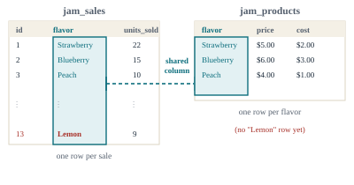
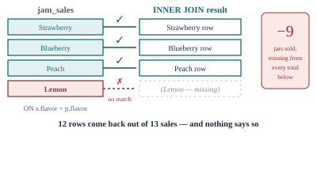
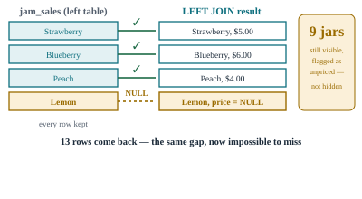
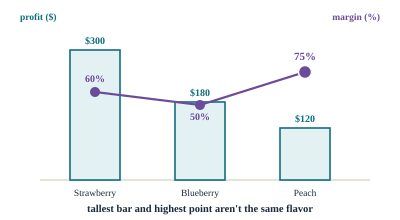

Calculating Metrics:From One Table to Two
Last week every answer came from a single table. This week the business questions get harder on purpose: you can't compute profit from a sales table alone — you need a second table with prices and costs, and a way to combine them.
The original deck teaches business metrics through Excel formulas only — and that content is still here, in Sections 2–4. What's new is Sections 5–8: JOIN, the SQL topic Week 1 promised, taught through the exact problem the original deck's metrics can't solve alone — combining a sales table with a prices-and-costs table.
Welcome: the same table trick, twice
Week 1 answered "what's typical, and how spread out." This week asks a harder question: "are we actually making money" — and that question needs two tables, not one.
- Calculate revenue, cost, profit, and profit margin from real sales data
- Explain why prices and costs usually live in a separate table from sales, and combine them with
JOIN - Choose between
INNER JOINandLEFT JOINdepending on whether missing matches should be hidden or surfaced
Quick recap of Week 1's toolkit, since today builds on it directly: SELECT / FROM / WHERE to choose your sample, AVG / COUNT / SUM for the center, STDDEV_SAMP for the spread, and GROUP BY to get one stat per category instead of one for the whole table. Everything this week adds sits on top of that — nothing from Week 1 gets replaced.
Here's this week's running scenario: you help run a jam stand at a Saturday farmers' market, selling three flavors — Strawberry, Blueberry, and Peach. Every sale gets logged in a jam_sales table: flavor, date, units sold. Prices and costs live somewhere else entirely, in a jam_products table, because they change rarely and apply to every sale of that flavor. The stand owner wants a straight answer: which flavor should we make more of next month? Sections 6 through 8 build toward that answer, and Section 10 delivers it with real numbers.
| flavor | selling price | cost price |
|---|---|---|
| Strawberry | $5.00 | $2.00 |
| Blueberry | $6.00 | $3.00 |
| Peach | $4.00 | $1.00 |
What is a business metric?
A standardized, quantitative measurement used to track and assess performance — the difference between "sales felt good this week" and a number you can compare, alert on, and defend.
jam_sales already gave you the raw ingredient — who sold how much, when. A metric turns that into something you can act on: revenue, cost, profit, or a per-category comparison. The four reasons this matters, straight from the business world:
- Performance improvement — tracking the right metric tells you how the business is doing and where to focus.
- Identifying problems early — a metric that's drifting the wrong way flags a problem before it becomes a crisis.
- Comparative analysis — metrics let you check performance against a benchmark, a competitor, or last month.
- Communication — a shared metric is how you report to customers, investors, or a stand owner without an argument about what "good" means.
This is BA1's "descriptive analytics" from a new angle: revenue and profit are the KPIs, and everything you're about to do — JOIN, GROUP BY — is just the plumbing that gets you from raw rows to a KPI you can report.
The same shape of metric, a different formula per industry
"Revenue" and "traffic" mean something slightly different in a shop, a restaurant, and a hotel — but the underlying shape (a rate, a total, a ratio) repeats everywhere.
| Industry | Metric | Formula |
|---|---|---|
| Retail | Sales revenue | SUM(quantity sold × price) |
| Foot traffic | COUNT(visitors) | |
| Restaurant | Average customer bill | SUM(revenue per day) / COUNT(customers) |
| Table turnover rate | meals served / seating capacity | |
| Hospitality | Occupancy rate | rooms sold / total rooms available |
| Average daily rate | room revenue / rooms rented | |
| تجزئة | إيراد المبيعات | SUM(الكمية المباعة × السعر) |
| حركة الزوار | COUNT(الزوار) | |
| مطعم | متوسط فاتورة العميل | SUM(الإيراد اليومي) / COUNT(العملاء) |
| معدل دوران الطاولات | الوجبات المقدَّمة / سعة الجلوس | |
| ضيافة | معدل الإشغال | الغرف المباعة / إجمالي الغرف المتاحة |
| متوسط السعر اليومي | إيراد الغرف / الغرف المؤجَّرة | |
| خردهفروشی | درآمد فروش | SUM(تعداد فروختهشده × قیمت) |
| ترافیک پیاده | COUNT(بازدیدکنندگان) | |
| رستوران | میانگین صورتحساب مشتری | SUM(درآمد روزانه) / COUNT(مشتریان) |
| نرخ گردش میز | وعدههای سرو شده / ظرفیت نشستن | |
| مهماننوازی | نرخ اشغال | اتاقهای فروختهشده / کل اتاقهای موجود |
| نرخ متوسط روزانه | درآمد اتاق / اتاقهای اجارهشده |
In May, the stand sold 100 Strawberry jars at $5, 60 Blueberry jars at $6, and 40 Peach jars at $4. Revenue = SUM(units × price) = (100×5) + (60×6) + (40×4) = $500 + $360 + $160 = $1,020. That's the retail formula above, done by hand — before Section 8 does it in SQL, joined against the cost table too.
Excel functions recap: the same stats, a different set of hands
The original deck for this week is Excel-only. You already know these ideas from Week 1's SQL — here's the Excel side, for whenever your data arrives as a spreadsheet instead of a live database.
| Excel function | Does | Week 1's SQL equivalent |
|---|---|---|
| AVERAGE() | Mean of the selected range | AVG() |
| MEDIAN() | Middle value of the selected range | PERCENTILE_CONT(0.5) |
| MODE() | Most frequent value in the range | GROUP BY + ORDER BY COUNT(*) DESC |
| AVERAGEIF() | Mean of a range, only where a condition holds | AVG() with WHERE, or GROUP BY |
| STDEV() | Sample standard deviation | STDDEV_SAMP() |
| VAR() | Sample variance | STDDEV_SAMP()2 |
| AVERAGE() | متوسط النطاق المحدد | AVG() |
| MEDIAN() | القيمة الوسطى للنطاق المحدد | PERCENTILE_CONT(0.5) |
| MODE() | القيمة الأكثر تكرارًا في النطاق | GROUP BY + ORDER BY COUNT(*) DESC |
| AVERAGEIF() | متوسط نطاق، فقط حيث يتحقق شرط | AVG() مع WHERE، أو GROUP BY |
| STDEV() | الانحراف المعياري للعيّنة | STDDEV_SAMP() |
| VAR() | تباين العيّنة | STDDEV_SAMP()2 |
| AVERAGE() | میانگین بازهٔ انتخابشده | AVG() |
| MEDIAN() | مقدار میانی بازهٔ انتخابشده | PERCENTILE_CONT(0.5) |
| MODE() | پرتکرارترین مقدار در بازه | GROUP BY + ORDER BY COUNT(*) DESC |
| AVERAGEIF() | میانگین یک بازه، فقط جایی که شرطی برقرار است | AVG() همراه با WHERE، یا GROUP BY |
| STDEV() | انحراف معیار نمونه | STDDEV_SAMP() |
| VAR() | واریانس نمونه | STDDEV_SAMP()2 |
AVERAGEIF() and GROUP BY aren't quite the same shape: AVERAGEIF() gives you one number for one condition you typed out by hand, while GROUP BY gives you one row per category automatically — for 3 flavors, that's one AVERAGEIF() per flavor versus a single GROUP BY flavor.
Why prices don't live inside the sales table
You could add a price column to every row of jam_sales. Real databases almost never do that — and the reason is worth understanding before you write a single JOIN.
Say you did add a selling_price column to every row of jam_sales. Strawberry sells at $5 across 4 different market days — so the price $5 would be copied into 4 separate rows. The day the stand raises Strawberry to $5.50, you'd have to find and update every single row that ever sold Strawberry, and if you missed even one, your data would quietly disagree with itself about what Strawberry costs. Keeping price in its own jam_products table means it's stored exactly once per flavor — update it there, and every future JOIN picks up the new price automatically.
This is Week 1's warehouse, with a second room. jam_sales is the loading dock — a fast, constantly-growing log of what left the building. jam_products is the price list pinned to the office wall — small, slow-changing, and looked up whenever the loading dock needs a number. JOIN is the trip between the two rooms, done automatically instead of by hand.

INNER JOIN: rows that match on both sides
The Week 1 promise, delivered: JOIN is how you combine columns from two tables into one result, matched on a shared column.
INNER JOIN is the strictest version: it keeps a row only if the join column has a match in both tables. Row up every jam_sales row against jam_products on flavor, and you get one combined row per sale, now carrying its price and cost alongside it.
CREATE TABLE jam_products (
flavor TEXT PRIMARY KEY,
selling_price NUMERIC(10,2) NOT NULL,
cost_price NUMERIC(10,2) NOT NULL
);
INSERT INTO jam_products (flavor, selling_price, cost_price) VALUES
('Strawberry', 5.00, 2.00),
('Blueberry', 6.00, 3.00),
('Peach', 4.00, 1.00);
-- Note: no row for 'Lemon' yet — Section 7 comes back to why that matters.
CREATE TABLE jam_sales (
id INT PRIMARY KEY,
flavor TEXT NOT NULL,
market_date DATE NOT NULL,
units_sold INT NOT NULL
);
INSERT INTO jam_sales (id, flavor, market_date, units_sold) VALUES
(1, 'Strawberry', '2024-05-04', 22),
(2, 'Blueberry', '2024-05-04', 15),
(3, 'Peach', '2024-05-04', 10),
(4, 'Strawberry', '2024-05-11', 25),
(5, 'Blueberry', '2024-05-11', 12),
(6, 'Peach', '2024-05-11', 8),
(7, 'Strawberry', '2024-05-18', 18),
(8, 'Blueberry', '2024-05-18', 17),
(9, 'Peach', '2024-05-18', 12),
(10, 'Strawberry', '2024-05-25', 35),
(11, 'Blueberry', '2024-05-25', 16),
(12, 'Peach', '2024-05-25', 10),
(13, 'Lemon', '2024-05-25', 9);SELECT s.flavor, s.market_date, s.units_sold, p.selling_price, p.cost_price
FROM jam_sales s
INNER JOIN jam_products p ON s.flavor = p.flavor
ORDER BY s.market_date;
-- 12 rows come back — every jam_sales row EXCEPT the Lemon sale on 2024-05-25,
-- because 'Lemon' has no matching row in jam_products.
Treating INNER JOIN as the safe default. It's the right choice when an unmatched row genuinely shouldn't count — but it silently deletes rows from your result with no warning, which is exactly the wrong behavior when an unmatched row is a data problem you need to see. Section 7 shows the fix.
LEFT JOIN: keep every row from the table that matters most
Row 13 was a real sale — 9 jars of a new Lemon flavor, sold before anyone added it to the price list. Losing it from a report isn't safe, it's a bug.
LEFT JOIN keeps every row from the table you list first (the "left" table — jam_sales here), whether or not it finds a match on the right. Where there's no match, the right-hand columns come back as NULL instead of the row disappearing.
SELECT s.flavor, s.market_date, s.units_sold, p.selling_price, p.cost_price
FROM jam_sales s
LEFT JOIN jam_products p ON s.flavor = p.flavor
ORDER BY s.market_date;
-- All 13 rows come back. The Lemon row still shows units_sold = 9,
-- but selling_price and cost_price are both NULL — a visible flag,
-- not a silent deletion.
A NULL from a LEFT JOIN is a finding, not an error to hide from. Here it means: "9 jars of Lemon were sold, and nobody has told the database what Lemon costs yet." That's worth a message to whoever's pricing the new flavor — not a silently shrunk report.
Revenue, cost, profit and margin — one query, all three flavors
Everything from today lands here: JOIN to bring price and cost alongside each sale, GROUP BY to collapse it to one row per flavor.
Revenue is units sold × selling price, summed. Cost is units sold × cost price, summed. Profit is revenue minus cost. Profit margin is profit as a percentage of revenue — the number that tells you which flavor is actually worth making more of, not just which one sells the most.
SELECT
p.flavor,
SUM(s.units_sold) AS total_units,
ROUND(SUM(s.units_sold * p.selling_price), 2) AS revenue,
ROUND(SUM(s.units_sold * p.cost_price), 2) AS cost,
ROUND(SUM(s.units_sold * (p.selling_price - p.cost_price)), 2) AS profit,
ROUND(100.0 * SUM(s.units_sold * (p.selling_price - p.cost_price))
/ SUM(s.units_sold * p.selling_price), 2) AS margin_pct
FROM jam_sales s
INNER JOIN jam_products p ON s.flavor = p.flavor
GROUP BY p.flavor
ORDER BY margin_pct DESC;
-- flavor | total_units | revenue | cost | profit | margin_pct
-- Peach | 40 | 160.00 | 40.00 | 120.00 | 75.00
-- Strawberry | 100 | 500.00 | 200.00 | 300.00 | 60.00
-- Blueberry | 60 | 360.00 | 180.00 | 180.00 | 50.00
-- (Lemon's 9 units are excluded here — INNER JOIN drops what LEFT JOIN would flag)Strawberry sells the most units and earns the most total profit — but Peach has by far the best margin: 75% of every Peach dollar is profit, against 50% for Blueberry. Volume and margin answer different questions, and Section 10 needs both to make a real recommendation.
AI co-pilot corner: the wrong JOIN doesn't throw an error
Picking INNER JOIN instead of LEFT JOIN isn't a syntax mistake — the query runs perfectly. That's exactly what makes it dangerous when an AI assistant picks it for you.
Prompt: "Write a SQL query joining jam_sales and jam_products to get total revenue per flavor."
-- What the assistant hands back:
SELECT p.flavor, SUM(s.units_sold * p.selling_price) AS revenue
FROM jam_sales s
JOIN jam_products p ON s.flavor = p.flavor -- plain JOIN defaults to INNER JOIN
GROUP BY p.flavor;It runs. It returns three tidy rows. What it doesn't show you: 9 jars of Lemon were sold and are missing from this total, because the prompt never said what to do about a flavor with no price yet, and the assistant defaulted to the join type that hides the gap instead of the one that reveals it.
Prompt: "Write a PostgreSQL query joining jam_sales and jam_products to get total revenue per flavor. Use a LEFT JOIN so any sale with no matching product row still appears, with NULL revenue, instead of being silently excluded."
SELECT p.flavor, SUM(s.units_sold * p.selling_price) AS revenue,
COUNT(*) FILTER (WHERE p.flavor IS NULL) AS unpriced_sales
FROM jam_sales s
LEFT JOIN jam_products p ON s.flavor = p.flavor
GROUP BY p.flavor;
-- Lemon now appears with revenue = NULL, and a flag showing 1 unpriced sale
-- exists for it — the gap is visible instead of silently missing.Trusting a JOIN because the row count "looks about right." 12 rows out of 13 sales looks like a small, reasonable trim — not obviously a bug. Verify it means checking that row count against what you expect, not just that the query ran.
Worked example: which flavor should the stand feature next month?
Section 1 opened with the question. Here's the full answer, built from every piece this page covered.
From Section 8's query: Strawberry earns the most total profit ($300), Blueberry the least ($180), Peach in between ($120) — but on far fewer units.
Peach converts 75% of every dollar into profit — the best of the three, by a wide margin over Blueberry's 50%. If the stand could sell as many Peach jars as Strawberry, profit would be far higher than any of today's real numbers.

Strawberry stays the anchor — it earns the most money today and shouldn't be cut back. But Peach's 75% margin is too good to ignore: the recommendation is to feature Peach more prominently next month (better placement, a small sign, maybe a free sample) and watch whether units sold rise without the margin dropping. And separately — someone needs to price Lemon before the next market day, so Section 9's LEFT JOIN stops finding an unpriced sale every week.
Common mistakes, gathered in one place
Everything this page warned about, as a single reference.
| Mistake | Why it matters |
|---|---|
| Bare JOIN defaulting to INNER JOIN | An unqualified JOIN means INNER JOIN — it silently drops unmatched rows unless you meant that. |
| Confusing AVERAGEIF() with GROUP BY | AVERAGEIF() is one condition typed by hand; GROUP BY produces one row per category automatically. |
| Trusting a row count because it "looks right" | 12 of 13 rows looks like a reasonable trim, not a bug — verify the count against what you expect, every time. |
| JOIN مجردة تُهمَل إلى INNER JOIN | JOIN غير المحدَّدة تعني INNER JOIN — تحذف الصفوف غير المتطابقة بصمت ما لم تقصد ذلك. |
| الخلط بين AVERAGEIF() وGROUP BY | AVERAGEIF() شرط واحد مكتوب يدويًا؛ GROUP BY تنتج صفًا واحدًا لكل فئة تلقائيًا. |
| الثقة بعدد الصفوف لأنه "يبدو صحيحًا" | 12 من 13 صفًا يبدو كتقليم معقول، لا خطأ — تحقق من العدد مقابل ما تتوقعه، في كل مرة. |
| JOIN ساده که پیشفرض به INNER JOIN میرود | JOIN بدون قید یعنی INNER JOIN — مگر منظورت همین باشد، بیسروصدا ردیفهای بیتطبیق را حذف میکند. |
| اشتباهگرفتن AVERAGEIF() با GROUP BY | AVERAGEIF() یک شرط دستیتایپشده است؛ GROUP BY بهطور خودکار یک ردیف برای هر دسته تولید میکند. |
| اعتماد به تعداد ردیف چون «درست بهنظر میرسد» | ۱۲ از ۱۳ ردیف مثل یک کوتاهشدن منطقی بهنظر میرسد، نه یک باگ — هر بار تعداد را در برابر انتظارت تأیید کن. |
Homework: write your report to the stand owner
You're the analyst. The stand owner from Section 1 is waiting on your recommendation. Write it up as a short report, in your own words, and email it to me — each section below is small on its own; answer them in order.
- Set the scene — In 2–3 sentences, describe the two tables (what each one holds, why they're separate) and the question the stand owner actually wants answered.
- Why two tables, not one — In your own words, explain why price and cost live in
jam_productsinstead of being copied into every row ofjam_sales. - INNER JOIN vs. LEFT JOIN — Run both joins yourself. What's different about the row count and the Lemon row between the two results? When would
INNER JOINactually be the right choice instead of a mistake? - The metrics — Paste your Section 8 query and its result. Which flavor earns the most total profit? Which has the best margin? Why aren't they the same flavor?
- Working with AI — Describe a moment from this week where you'd need to explain, verify, or stand behind a JOIN an AI assistant wrote for you. What could go wrong if you skipped that step?
- The decision — What should the stand actually do next month? Give your recommendation and justify it with the actual numbers, not a guess.
Before Week 3
You can now compute the right numbers. Week 3 asks a different question: how do you show them to someone who doesn't want to read a table — choosing the right chart, and knowing when a chart is quietly misleading.